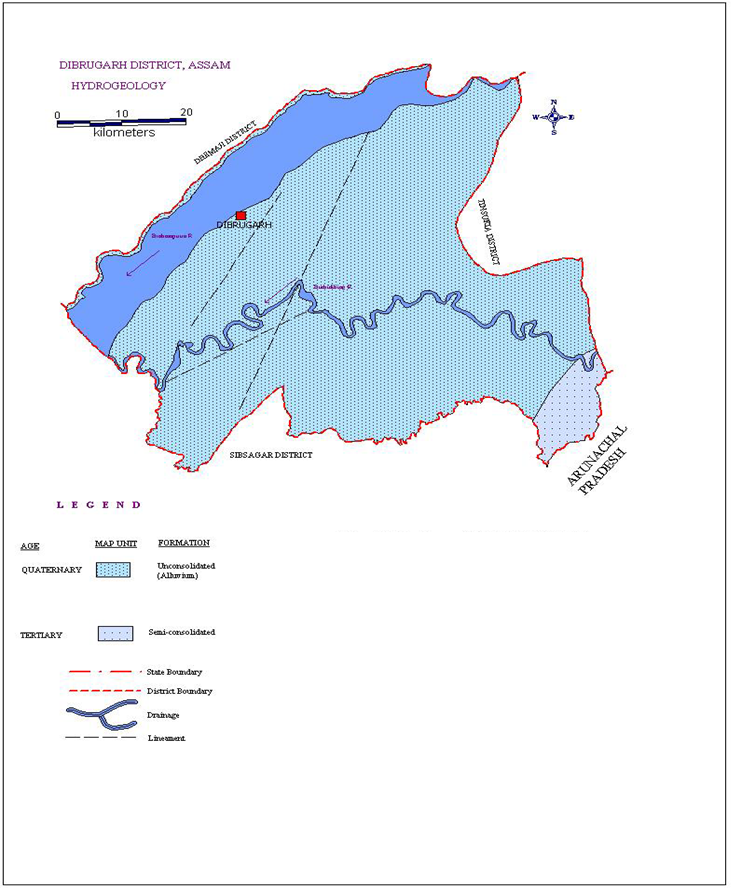
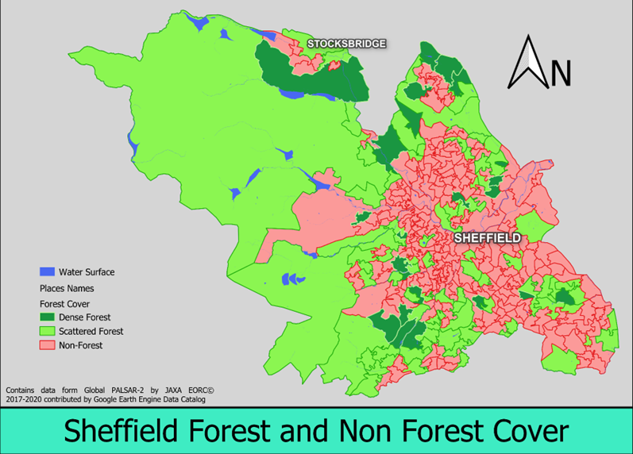

Geospaital Sentiment Analysis

TITLE: Do Geotagged Tweets Hold the Key to Predict Local Elections in the West Midlands via Sentiment Analysis? (2023)
This dissertation was written as a part of the MSc. in Applied GIS at the University of Sheffield.
This dissertation examines the use of GIS and sentiment analysis for predicting local election 2023 of West Midlands with twitter (now known as X) data. The sample of the study focuses on the variation in people’s opinion who use tweets to express their views during the time period of election in West Midlands. The data used in the study was extracted using python library called Snscrape (JustAnotherArchivist, 2020) with some specific spatial and temporal filters for Local elections in 2023 as mainstream search. For conducting the sentiment analysis, this study uses TextBlob library which provides us sentiment scores to compare and also provides us classifications. At the end a comparison between the analysed result and the election results is presented to identify the accuracy of the model which will suggest whether the model is able to predict the election result and if so, then how accurate it is. This report will provide information about the results achievable while combining GIS with opinion mining. The result will provide sufficient information about the accuracy of predictions and the potential limitations of the data and methods used while conducting the analysis.
The methods used in the report seems to overcome some critical issues like spatial and temporal elements and noise filtration still there are some limitations that needs some future work to fully utilise the integration of GIS and sentiment analysis to explore more possibilities of obtaining highly accurate prediction results. Still there are challenges that needs to be addressed and overcome in future literatures.
Skills used: Python, deep learning, automation, spaital analysis, geocoding, map visualisation, spaital model creation
Datasets used: Geocoded Tweets, West Midlands boundary
Tools used: Python, Googlecolab, QGIS, MS Excel
Disaster Management Report

TITLE: FLOOD: Measuring the Flood Disaster, Preparedness and Relief Mechanism in Dibrugarh, Assam
Like many states in India, Assam has been suffering a lot from floods concerning environmental degradation. The two have been leading to this natural havoc for most of the districts. The district of Dibrugarh of the state is one of the prominent districts, which is still under the severe stress of flood where hundreds of villages and even towns are affected. The purpose of this study are to find out how floods are leading to environmental degradation and thereby its effects. With the help of field-based data as well as some secondary information, it has been revealed that soil erosion, deforestation, degradation of soil quality due to deposition of huge amounts of sand and silt, loss of thousands of plants, domesticated as well as wild lives even human being, water pollution etc. are subjected by the floods. These are leading to a lack of day-to-day requirements of livelihood like food, shelter etc., unhygienic living conditions, loss of cultivated crops, occurrence of various diseases, damage and destruction of educational, religious institutions, Govt. and Non- Govt. offices, disruption of communication due to damage of roads, bridges etc. Besides, many of the riverine people have been displaced from their original habitation. great rivers of Assam- the Brahmaputra and the Barak and their large number of tributaries.
Skills used: GIS software, remote sensing, hydrological analysis, geological analysis, drainage mapping, map visualisation
Datasets used: LANDSAT 8, Dibrugarh administrative boundary, Brahmaputra river shapefile, soil datasets
Tools used: ArcMap, USGS Earth Explorer
Sheffield Forest & Non-Forest Cover

TITLE: Forest and non forest cover analysis using Google Earth Engine
Undertaking an individual odyssey as a vital component of my coursework, I embarked upon an intricate journey into the heart of Sheffield's landscape, driven by the desire to unveil the secrets of its forest cover. Armed with satellite imagery and a keen thirst for knowledge, I commenced a solitary expedition, meticulously navigating through layers of data to unearth the intricacies of the city's ecological fabric.
Leveraging sophisticated tools such as Google Earth Engine (GEE) and QGIS, I painstakingly analysed Forest/Non-Forest cover datasets meticulously sourced from JAXA and SAR imagery. With each scrutinised pixel, distinct patterns emerged, painting a rich and nuanced portrayal of Sheffield's green expanse. From lush woodlands to urban clearings, every verdant patch revealed a narrative of resilience and adaptation.
As the project unfurled, I transcended the role of a mere observer to become an active participant in the discourse surrounding urban ecology. Through empirically-derived insights, I reflected upon the profound implications of my discoveries for urban planning and environmental stewardship. From the confines of academic study to the esteemed halls of scholarly debate, my work served as a catalyst for discussions on sustainability and the cultivation of green infrastructure.
While the journey was undertaken in solitude, its impact extends far beyond the realms of my personal academic pursuit. As I tender my findings, I bequeath a legacy of diligent inquiry and relentless exploration—a testament to the transformative potential inherent in individual endeavour in the noble pursuit of environmental enlightenment.
Skills used: Remote sensing analysis, programming, GIS software, spatial analysis, satellite imagery, map visualisation
Datasets used: Sheffield Boundaries LSOA, Forest/Non-Forest cover 2017 (JAXA), Global Forest/Non-Forest Map (SAR Imagery)
Tools used: Google Earth Engine, QGIS